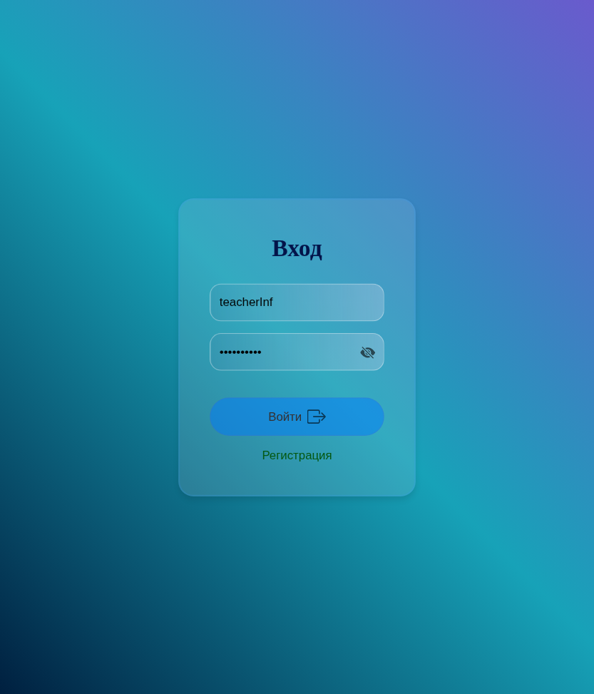

1. Страница Входа: Начальная страница, предлагающая пользователю авторизоваться или зарегистрировать новый аккаунт.
2. Страница Регистрации: Простой и понятный интерфейс для регистрации новых пользователей.
3. Панель Учителя: Главная административная страница для управления учебным процессом.
4. Просмотр Успеваемости Учеников: Учитель может просмотреть успеваемость; доступна детализация информации и возможность возврата теста для повторной сдачи.
5. Подробный Отчет по результатам тестирования.
6. Создание Теста: Настройка названия, описания и определение целевой группы.
7. Наполнение Теста: Добавление вопросов, мультимедийного контента (фото, формулы), вариантов ответов и указание правильного решения.
8. Создание Групп: Для повышения безопасности и исключения случайного удаления связанных тестов кнопка удаления группы отключена.
9. Ограничение Повторной Сдачи: Тесты становятся недоступны ученику после первого прохождения; Учитель может предоставить второй шанс на сдачу.
10. Панель Ученика: Доступ к результатам (как в п. 4) и просмотр подробной информации по своим ответам (как в п. 5).
11. Процесс Тестирования: На прохождение теста отводится 20 минут (время настраивается).